The paperlesspaper app vs spectra6-dotgain
Six of paperlesspaper's sample images dithered for the OpenPaper L (1600×1200) two ways: by epdoptimize 1.3.0 the way the paperlesspaper app runs it, re-created from the app's source, and by spectra6-dotgain. Both are simulated as the panel would show them, with a model measured on a real panel in which darker pixels bleed into lighter neighbours. Our dithering is designed for that model, so it has the advantage here; the README has the tests on a real frame.
Click a whole image to pick a close-up. Panel white is shown as screen white. The model's black is a little purple-blue in both simulations.
Portrait (AI-generated)

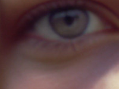
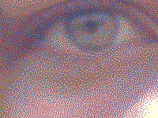
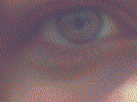

Which is which
top: paperlesspaper app, re-created, bottom: spectra6-dotgainParade

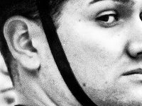
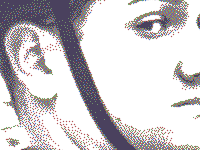
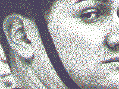

Which is which
top: spectra6-dotgain, bottom: paperlesspaper app, re-createdFlags

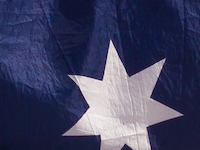
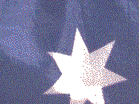
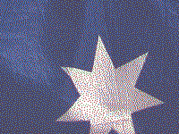

Which is which
top: paperlesspaper app, re-created, bottom: spectra6-dotgainWarehouse at dusk

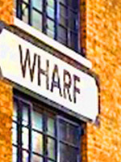
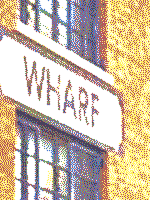
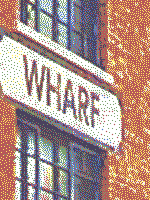

Which is which
top: spectra6-dotgain, bottom: paperlesspaper app, re-createdSignpost in snow

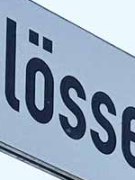
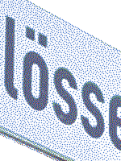
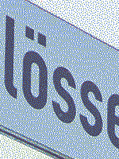

Which is which
top: spectra6-dotgain, bottom: paperlesspaper app, re-createdGrey ramp

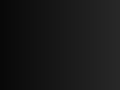
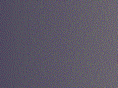
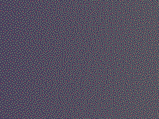

Which is which
top: spectra6-dotgain, bottom: paperlesspaper app, re-createdSample images: paperlesspaper, under their own terms (samples/NOTICE).